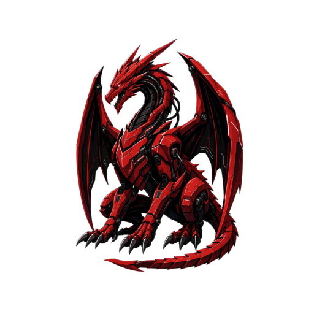

Auditoria Express
Para empresas pequenas que querem saber se estão muito expostas.
$500
Entrega em 2–3 dias
- Reconhecimento básico
- Superfície externa + scan controlado
- Revisão manual limitada
- Relatório com principais riscos

Dracul CybersecOperações ofensivas para provar caminhos de ataque em aplicações, nuvem, identidade e perímetro. Menos checklist, mais evidência técnica e correção priorizada.
A Dracul Cybersec é uma empresa de cibersegurança especializada em pentest, Red Team e pesquisa de vulnerabilidades. Ajudamos organizações a identificar falhas e entender os riscos em seus ambientes digitais.
Nossas avaliações partem de um escopo autorizado e conectam evidências técnicas ao impacto no negócio. Cada entrega orienta a priorização das correções e o reteste para validar a proteção dos ativos.
Trabalhamos com operações orientadas a evidências reais e zero falsos positivos, com relatórios técnicos acionáveis para times de engenharia e visão estratégica para a liderança.
Definição de escopo, autorização, objetivos, janela, contatos e regras de engajamento.
Coleta de informações públicas, ativos, domínios, tecnologias, usuários e superfície exposta.
Mapeamento de portas, serviços, versões, diretórios, permissões, identidades e pontos de entrada.
Validação técnica de vulnerabilidades, priorização por impacto e escolha dos caminhos exploráveis.
Execução controlada de provas de conceito, abuso de falhas e demonstração do impacto real.
Entrega das evidências, plano de correção, recomendação técnica e reteste após mitigação.
Para empresas pequenas que querem saber se estão muito expostas.
$500
Entrega em 2–3 dias
Primeiro pentest de uma aplicação web pequena ou média.
$1,300
Entrega em ~5 dias
Sistema web real com usuários, permissões e API.
$2,400
Entrega em 7–10 dias
Para cliente com sistema mais sério e dados sensíveis.
$4,000
Entrega em 10–15 dias
Para empresas com domínio, subdomínios, aplicações e infraestrutura externa.
$6,400
Entrega em 15–20 dias
Toda entrega separa o que o gestor precisa para decidir do que a equipe precisa para corrigir: risco de negócio e prioridade de um lado, prova técnica reproduzível do outro. Sem alarmismo e sem checklist genérico — apenas o que está realmente exposto e o que fazer primeiro.
Resumo executivoUma página em linguagem de negócio: nível de risco geral, exposições críticas e a decisão recomendada para quem aprova orçamento.
Cadeia de ataqueO caminho real do atacante de ponta a ponta: ponto de entrada, exploração, escalada de privilégio, movimentação lateral e impacto final.
Severidade e priorizaçãoCada achado classificado por CVSS, probabilidade de exploração e impacto no negócio — definindo objetivamente a ordem do que corrigir.
Evidência reproduzívelRequests, payloads, comandos, prints e logs com os passos mínimos para sua equipe reproduzir e confirmar cada falha.
Correção priorizadaMitigação prática com responsável (owner), esforço estimado, risco residual e reteste para comprovar que a falha foi fechada.
Guia rápido
Entenda como o Shodan funciona: um motor de busca para dispositivos, serviços e tecnologias expostas na internet, usado em reconhecimento, inventário de ativos e validação de superfície de ataque.
Artigo no LinkedIn
Caso prático sobre webcams e câmeras IP mal configuradas, com foco nos riscos de privacidade, exposição de RTSP, credenciais padrão e medidas para reduzir acesso indevido.
Livro
Fundamentos essenciais para iniciantes em segurança da informação, com foco em base prática para pentest e defesa.
DRACUL COIN · BASE
Um projeto independente de criptomoeda associado à Dracul Cybersec, com token ERC-20 implantado na rede Base.
Conheça o contrato, a documentação pública e o mercado WETH / DRAC na Uniswap v2.

Conte o alvo, o objetivo e o escopo desejado. O briefing será transmitido com sigilo absoluto para a nossa equipe técnica de segurança ofensiva para avaliação de viabilidade e agendamento de alinhamento.